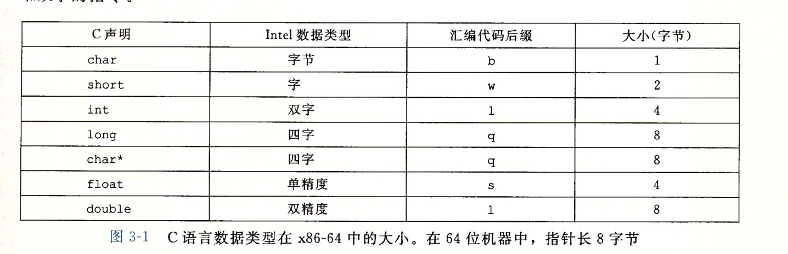
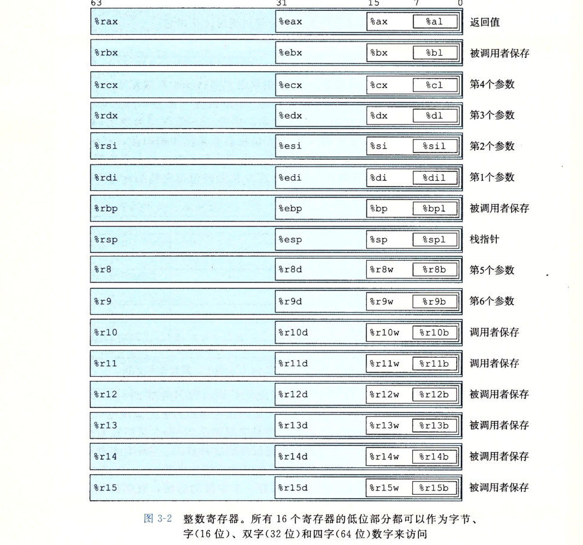
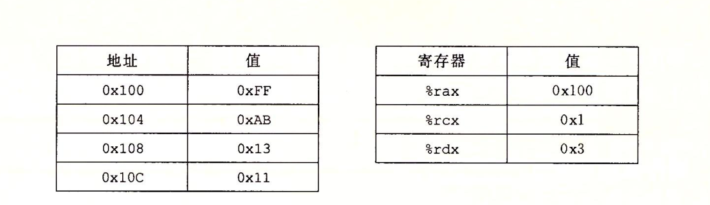
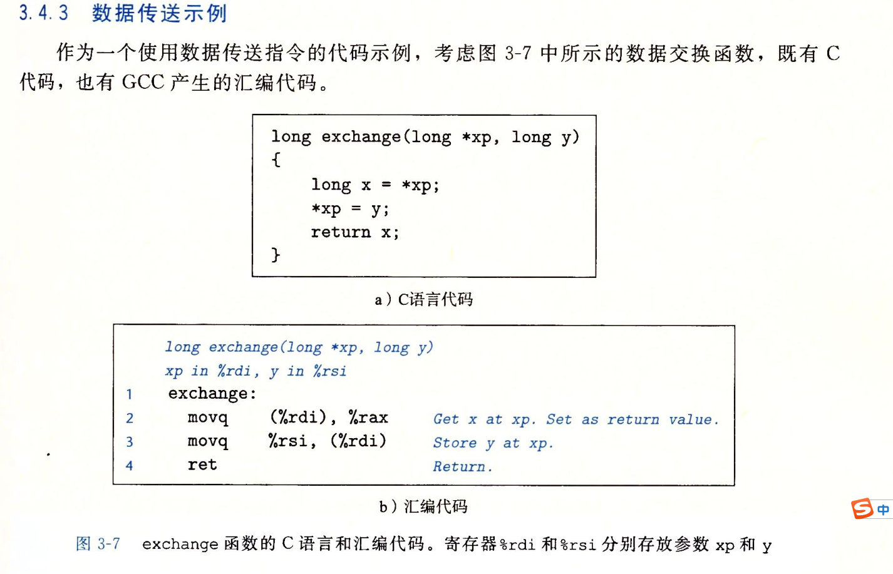

C语言代码的汇编级别表示
mstore.c
1 | long mult2(long, long); |
通过gcc -Og -S mstore.c命令生成如下汇编代码
1 | mulstore: |
通过gcc -Og -c mstore.c产生mstore.o文件，通过objdump -d mstore.o查看该文件
1 | 0000000000000000 <mulstore>: |
数据格式

访问信息
一个x86-64的CPU包含一组16个存储64位值的
通用目的寄存器，这些寄存器用来存储整数数据和指针。

操作数指示符
操作数分为3种类型：
- 立即数：$-577，$0x1F
- 寄存器：%bp，%rax
- 内存引用：(%rax)
数据传送指令
数据传送指令是将数据从一个位置复制到另一个位置。
源操作数指定的值一定是一个立即数，存储在寄存器中或者内存中。
目的操作数指定一个位置，要么是一个寄存器，要么是一个内存地址。
传送指令的两个操作数不能都指向内存位置。

| 操作数 | 值 |
|---|---|
| %rax | 0x100 |
| 0x104 | 0xAB |
| $0x108 | 0x108 |
| (%rax) | 0xFF |
| 4(%rax) | 0xAB |
| 9(%rax, %rdx) | 0x11 |
| 260(%rcx, %rdx) | 0x13 |
| 0xFC(, %rcx, 4) | 0xFF |
| (%rax, %rdx, 4) | 0x11 |
例题：
1 | movb $0xF, (%ebx) //%ebx不能作为地址寄存器 |

系统